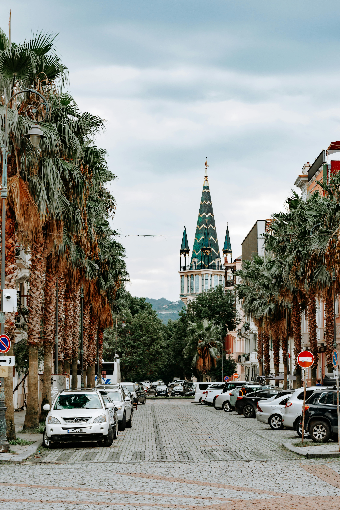
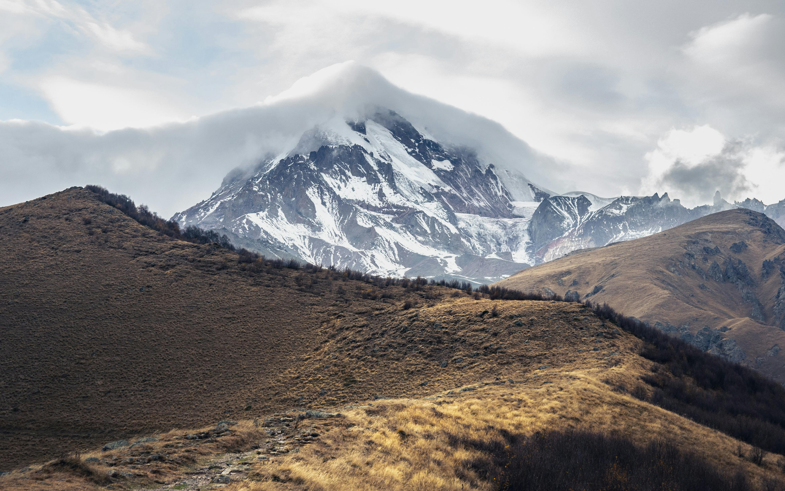
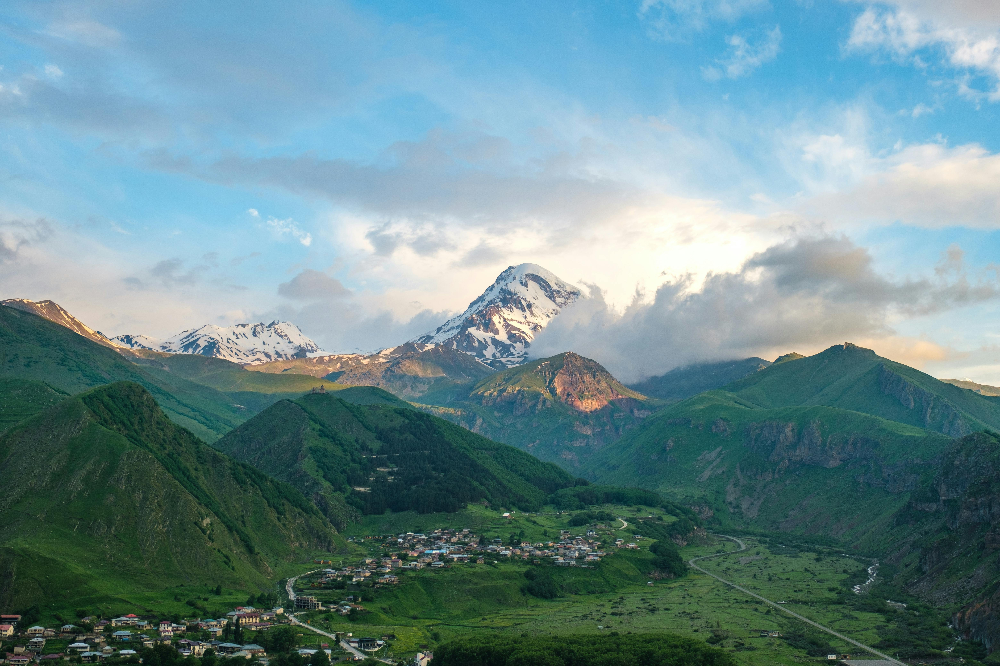
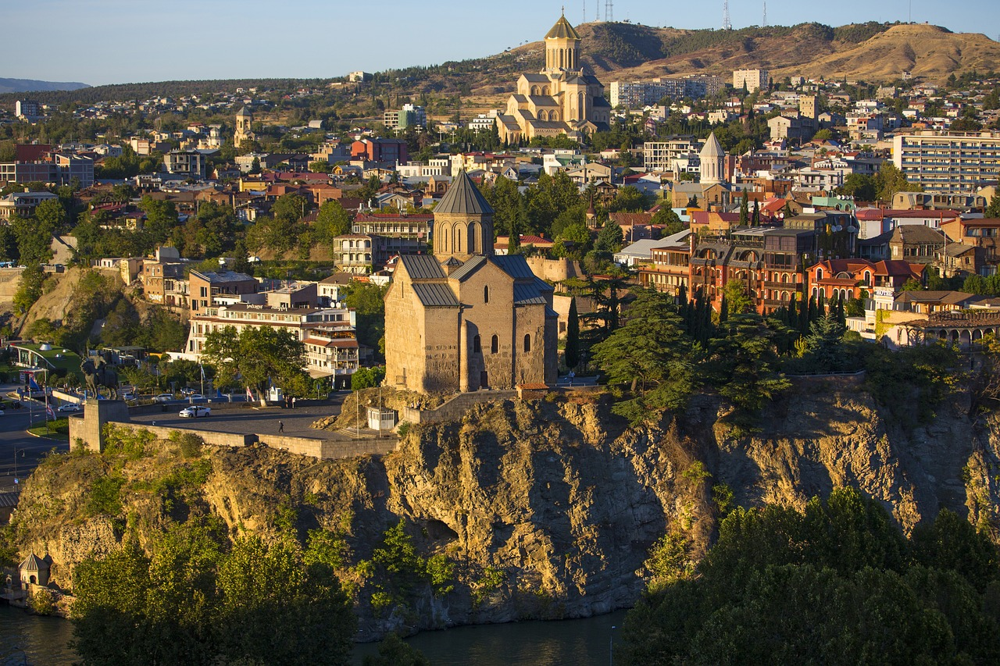

Batumi, nestled on Georgia's Black Sea coast, is a vibrant city known for its
unique blend of modern architecture, historic charm, and bustling seaside atmosphere. Renowned
for its palm-lined boulevards, Batumi offers a picturesque backdrop of contemporary skyscrapers
alongside beautifully restored 19th-century buildings. The city's Batumi Boulevard, stretching
along the waterfront, is a hub of activity with cafes, gardens, and the famous Ali and Nino statue,
symbolizing eternal love. Whether exploring its botanical gardens, trying local delicacies at the
bustling markets, or simply enjoying a stroll along the promenade, Batumi welcomes visitors with
its unique coastal charm and warm hospitality.

The peak of Mt Kazbek, which rises to a height of 5,033 meters, is the second
highest in the Georgian Caucasus. The mountain, like many others in the Caucasus, is an extinct
volcano, exposed to the point of aridity, and its rocky landscape is one of the most dramatic in
the Middle Caucasus.At the foot of the peak of Mount Kazbek, the town of Kazbegi is built, amidst
a beautiful landscape of mountains and cliffs, which adorn it as a large natural theater. Kazbegi
is currently used as a center for trips and excursions in the surrounding mountains.

The Georgian military road.Until the railroad from Batumi to Moscow was laid,
at the beginning of the 20th century, the road, crossing the ridge from Tbilisi to Vladikavkaz,
was considered the most important route that connected Georgia with countries north of the Caucasus.
For thousands of years, the mountainous, narrow and sloping gorge above chasms was guarded by tribes
loyal to the ancient kings of Georgia, and watchtowers were scattered along it. With the annexation
of Georgia to Russia at the beginning of the 19th century, the Russian army expanded the path, and from
then until today the road preserves the historical story of the path.

In the Meskhety Mountains lies the large, wooded and impressive Borjomi Park.
The park was founded in 1929, to protect the forests of the steep valley of Borjomi and serve as
a refuge for the Caucasian reindeer. Various paths have been marked in the reserve that allow travelers
to walk along them for a few days in nature, almost without human interference. The reserve has a large
and rich variety of plants. The open part of the park is a beautiful garden, with a stream flowing through
it, a natural soda spring springs up in its heart, and crowds of Georgians come to walk in it, have fun with
their children and look at the old and ornate houses of the nobility, built near its gates.

Tbilisi, the city of hot springs, was used as a settlement already in the Neolithic period.
Since then, it has been occupied and destroyed dozens of times. Its position at the main junction of the Caucasus
roads made it not only the capital of many vicissitudes of Georgia but also the main city in the entire South Caucasus.
Every conqueror stamped his culture and customs on it, and every merchant caravan that camped there added something to
the multi-national fabric that characterizes it. The city, today large and modern, lies in a river valley. It has a
small ancient quarter, with narrow and winding alleys, walls and picturesque walled houses, 1500-year-old hot baths,
a museum of Georgian treasures and many small restaurants that serve the delicacies of the Caucasus.